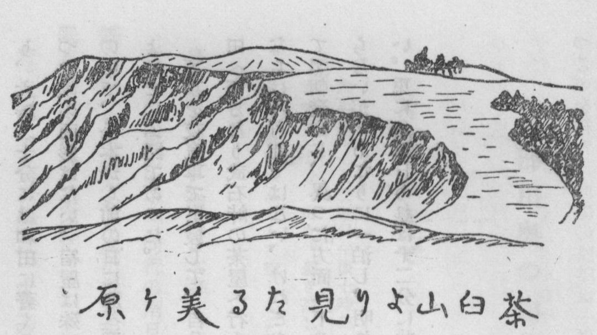

筑摩山脈の
武石峠が日本アルプス殊に北アルプスの好展望地であることは、『山岳』五年三号の附録中村清太郎君筆の「冬季信州武石峠より望める日本アルプス略図」に依って世に紹介されてから、山岳の展望に趣味を持つ程の人で知らぬ者は無い
位有名になった。実際
此山脈の山で千七、八百米の高さがあれば、
孰れも眺望がよさ
相に思える。中にも美ヶ原は山脈の中央部に位し、
且つ
其西方に連嶺の最高点二千三十四米の一隆起を控えているから、これに登ったならば更に広闊なる眺望が得られるであろうと、昨年
（大正九年）の十月末に出掛けて見た。時間が遅くなったので原迄しか行かれず、最高点に登れなかったのは残念であったが、予期の大観に接することは出来たので、其時のことを少し書いて見ることにした。尤も今では春秋の気候の好い時節には、松本市の中学校や女学校で生徒の遠足地としてよく登山するそうであるから、或は遼東の
豕たる
譏を免かれないかも知れぬ。
東京を出る時の予定では、和田峠から尾根伝いに美ヶ原に行き、物見石山を経て和田に下りて一泊。翌日は男女倉道を八島ヶ池に出で、鎌ヶ池に廻り、車山に登りて尾根伝いに大門峠に下り、附近の都合よき場所に野営。三日目に蓼科山に登って其日の
中に帰京しようという、例の慾張りすぎた計画であったが、二日目に雨に降られたので和田峠を
踰えて帰京してしまった。
午後十一時飯田町発の汽車に乗って下諏訪駅で下車したのは、十月三十一日の午前八時を少し過ぎた頃であった。
直に出発して和田峠に向う。暫く見ない中に附近の様子が大部変っているのに驚いた。殊に目立つのは落葉松の植林の多いことである。西餅屋に着いたのが十時十分。途中振り返ると木曾駒や御岳が孱顔を現している。此道から御岳の見えることは初めて気が着いた。
此処から近道をしようと左手の祠の前の旧道を辿って行くと、新道が山の鼻を大曲りに迂廻しようとする角の所に出る。旧道は
其処から谷の窪に沿うて、今の峠と峰一つ隔てた西の鞍部に出たと記憶して居るが、
最早殆んど道の形も存して居ないから、左手の小尾根を北に向って上り始め、
稍や笹の深い所を通過して和田峠に続く尾根まで登ると、意外にも小土手を中央にして二条の防火線が造られてあるのを見た。霜解の為に滑る所もあったが、笹の中を歩くよりは
遥に楽である。十勝石の破片が多い。丁度十二時に最初の千七百二十米の圏を有する地点に達した。土手から
一寸首を出して向うを見ると、西北の冷い風が汗ばんだ顔にひやりと当って、危峭天を刺す槍穂高の連峰が、新雪に輝く白冷の姿を眼の前に屏風だちに立ちはだからせる。其瞬間息がつまるように感じた。こんなに綺麗でそして
雄勁な山の膚や輪廓を見た事がない。余り綺麗なので
拵えた物ではないかと、
不図そんな
考が浮んだ程である。
然し晴れ渡った日の
午下の太陽に隈なく照り映えて、寒水の如く澄み切った晶冽な大気の中に水が滴るかと思われる位冴えに冴えた
藍
の肌を
眤と見ていると、
矢張一の大芸術品というような感じが起る。何となく名刀の焼刃の匂と似通っているような気がした。乗鞍岳にも
可なり雪はあったが、御岳は割合に少なかった。笹の中に腰を卸して寒風を防ぎながら用意の昼食を済し、再び防火線について
三峰山に向った。千八百米の標高線の附近で尾根が左に折れているが、防火線も此処で終っているので、短い笹と草との中を走っている路跡を辿って、三峰山の三角点に達したのは午後一時頃であった。此防火線は尾根通を
蜿々と続いて、鷲ヶ峰から鎌ヶ池の附近を通り、千八百七米の三角点ある隆起までも達している。場合に依っては
之を利用して楽な登山が出来ようと想う。
三峰山の眺望は実にすぐれたものであった。南は富士山から始めて甲斐駒山脈の諸山、雪の白い北岳、
間ノ岳、続いて仙丈岳、荒川岳（塩見岳）、
悪沢、
奥西河内（西河内
及無河内）、赤石、
聖、大沢、兎などが見え、木曾駒山脈の半以南は雲に掩われていたが、御岳はよく見えた。乗鞍岳の右前にはここより少し高い
鉢伏山が尨大な山容を横たえて、
稍や展望を遮ぎる。其右に霞沢岳が現れ、西穂高、前穂高、奥穂高、涸沢、北穂高、南、大喰、槍ヶ岳と、北アルプス南半の大立物が岩骨稜々として、天空に大鋸の歯を刻んでいる。蝶ヶ岳や常念岳は其前に稍や低いが、
大天井の一群は
流石に高い。野口五郎岳が
蛙岩の上から頭を出している。
燕岳、台原山の連脈が東沢
乗越で一旦低下して更に餓鬼、唐沢の二山を
崛起しているが、此処から見た餓鬼岳の姿は
素派らしいものである。其右には低く南沢、不動堀沢、
七倉の一群が続いて、其上に殆ど純白に化粧した立山本山及竜王、鬼ヶ岳に至る連峰が望まれる。針木、蓮華、
爺、鹿島槍、五竜、大黒、牛首、唐松、
奥不帰、
鑓、
杓子、白馬、小蓮華と山稜の大波がうねって、其右は王ヶ鼻に遮断されている。
是だけでも壮観である上に、東から北へかけて八ヶ岳蓼科の連山、妙義、
破風（荒船山）、浅間連峰、
四阿、白根火山群からして、遠く奥上州の群山が
一眸の裡に集る。大概山に渇している人でも、此山頂に半時間も過せば満足を得るであろうと思う。頂上には多少岩などもあって、
米躑躅が叢生していた。
三峰山の北の千八百二十米の峰から急に下りとなって、地図には表わしてないが西側から喰い込んだ危いガレが二つ
許ある、其縁を辿ると下から吹き上げる風に、
※爛［＃「雨かんむり／誨のつくり」、U+9709、311-11］した粉のような黄色の細砂が舞い上って目もあけず息もつけない、急いで通り過ぎて見ると体が黄粉をふり懸けられたようになっていた。下りが急になって、笹も
茅も人丈を没する程に伸びている。今迄
禿山であったのが此辺から木立が現れて来た。殊に西側の方が繁っている。下り切って前の高みへ登るのかと思えばそうではなく、主脈は其西の低い所に通じている。尾根の工合が如何にも南アルプスの上河内岳の附近に似ていると思った。此処からまた路がよく踏まれているので注意して行くと、右手の山ひらに小屋があって、煙が洩れている。霞網の鳥屋であろうと思った。立ち寄る必要もないので
其儘扉峠の方へ前進を続けた。峠の道に出たのは二時少し過ぎていたろう。此道はボツボツと通行人が絶えないので、山道としては左程悪い方ではないらしい。折から一頭の犬が東から登って来て小屋の方へ馳せて行った。

茶臼山より見たる美ヶ原
暫く休みて再び程に上り、千七百八十米の峰を
※［＃「虫＋兪」、U+8753、312-7］えるとそれからは小突起の連続で、地図には草地の記号しか入れてないが、少許の藪があって登りも長く、南からする
三頭の登りを思い出させた。勿論進行を妨害する程ではない。峠から約一時間を費して三時二十分に茶臼山の頂上に立つことを得た。此処の眺望は一層の闊大を加えて北方は北アルプスの
箙岳迄視界が開ける、南アルプスや槍穂高の方面は漸く霞に
罩められて、鋭い輪廓もうすれて来た。脚下の美ヶ原は枯草色の平坦な高原を斜に展開して、西寄りに鍋を伏せたような形をした隆起が即ち二千三十四米と測られた地点である。南端は
可なり高い絶崖に限られ、東の方は物見石山へ連る尾根が原の一部をなして、針葉樹が所々に散生している。もう時間が遅いので予定の行動は執れぬ。よし最高点に登ったとしても、空が霞んでいるから遠望はきかない。それで此処から下山することにして、
苔桃の実に喉を潤し、それでもまだ気懸りなので原の中央まで駈足で行き駈足で戻り往復三十分を費して荷物を置いた場所迄来ると、直にそれを背負って和田に通ずる道をかけ下りた。少し下ると美しい
栂の林に抱き込まれる。暫くして清冷な水が湧き出しているので、半日の渇を癒すことを得た。足元の明るい中に人里まで出られないと困ると思って急ぎに急いだが、案外路がいいので足も
捗取り、六時二十分には和田に着くことを得た。この宿もすっかりさびれてしまって、人通りの多かった頃の面影はない。宿屋は殊に見すぼらしくなった。唯翠川というのがよいらしく、翌日汽車の中で、松本から前の日に原へ登って和田へ下りて其家に泊ったという渡君に
遇ったら、果してよいという話であった。
東京を夜汽車で出発して、自分のように尾根伝いに原まで行き、更に最高点を極めて其日に和田へ下るなり武石峠の茶屋へ行くなり、或は松本方面へ下山することも、春の日永の頃であったならば不可能ではない、けれども秋から冬にかけてはむずかしいから、松本
若くは和田に一泊して翌朝登山し、異った方面へ下るか、
左もなければ南から尾根を辿って扉鉱泉（設備の如何を知らないが）あたりに一泊し、明れば茶臼山、美ヶ原、武石峠を経て松本に出ることは困難ではない。
兎に
角三日あれば十二分に此山脈の主要部を跋渉することを得ようと思う。
（大正一〇、一二『山岳』）